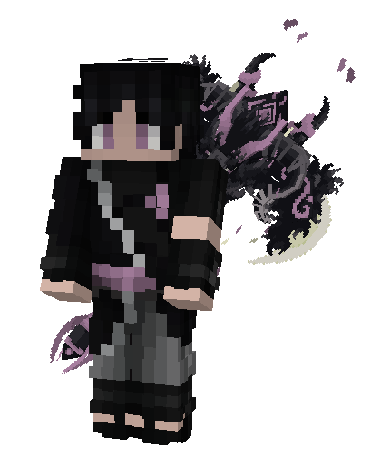

AELOR KEMURI
« Un jour… même le vent aura une forme »
Fiche de Personnage

Yeux violets. Cheveux noirs flottants. Peau pâle. Une aura de fumée ne le quitte jamais.
L'Éveil du Clan
Le Clan Kemuri · 煙の一族
Discret et méconnu, le clan Kemuri maîtrise la fumée depuis des générations. Installés dans les terres arides de Suna, ils manipulent le chakra comme une vapeur invisible — capables de se fondre dans l'obscurité, de dissimuler leurs alliés, d'étouffer leurs ennemis dans une brume empoisonnée. Souvent perçus comme faibles ou instables par les autres clans, ils portent pourtant un secret : la fumée n'est que la chrysalide du cristal.
L'Éveil d'Aelor · 覚醒
Très jeune, Aelor ressent un décalage profond : là où les membres de son clan embrassent la nature volatile de leur pouvoir, lui la rejette. Il déteste l'idée de disparaître, de ne jamais laisser de trace. Un jour, en observant le sable chauffé par le soleil, il aperçoit des fragments brillants — presque cristallins. Une idée naît : « Et si la fumée pouvait devenir solide ? » Lors de l'examen Genin, pour la première fois, de fines structures translucides se forment dans sa fumée. Des éclats de cristal — fragiles, imparfaits… mais bien réels.
La Quête du Shōton · 晶遁
Le Shōton — la Release du Cristal — est une nature de chakra légendaire, fusion du Fūton (Vent) et du Doton (Terre). Nul membre du clan Kemuri ne l'a jamais accomplie. Aelor est convaincu que la fumée n'est pas l'opposée du cristal, mais sa forme transitoire : il suffit de lui apprendre à se figer, à s'ordonner, à rayonner. La fumée est le chaos — le cristal est l'éternité. Entre les deux : la volonté d'Aelor. « Tout se dissipe… sauf ce qui trouve une forme. »
Pouvoirs & Capacités
Manipulation instinctive de la fumée et de la vapeur de chakra. Invisibilité, confusion sensorielle, toxines gazeuses, voile de brume suffocant. La marque ancestrale du clan — une seconde nature pour Aelor, aussi naturelle que respirer.
Chakra de nature tranchante et invisible. Aelor l'utilise pour propulser ses nuages de fumée, créer des rafales déchirantes et préparer le terrain au façonnement cristallin. Le vent est l'architecte de la tempête.
Chakra lourd et structurant. Aelor le maîtrise partiellement — encore apprenti dans cet art qui lui est étranger. C'est la clé manquante : la rigidité qui transformera sa fumée éphémère en cristal éternel.
La fusion légendaire du Fūton et du Doton — permettant de cristalliser toute matière organique, de créer des structures de diamant pur, d'emprisonner ses ennemis dans des prisons translucides. Aelor est à l'aube de ce pouvoir : certains soirs, quand sa fumée se fige dans l'air froid, on voit briller ses premiers éclats de lumière cristalline. L'aboutissement d'une existence entière.
Présentation Physique
Silhouette & Stature
À 1m48 pour 36 kilogrammes, Aelor possède une ossature légère et des membres longs pour son âge, lui donnant une allure presque aérienne. Il ne prend pas de place — ou plutôt, il choisit de n'en prendre aucune. Sa posture est toujours droite, jamais rigide. Il se déplace sans bruit, avec une économie de gestes qui rappelle quelqu'un habitué à ne pas se faire remarquer. Même au repos, son corps semble en veille permanente, comme une fumée qui attend qu'on lui donne une direction.
Teint & Peau
Sa peau est anormalement pâle pour quelqu'un qui vit dans les terres arides de Suna. Là où le soleil marque ses habitants d'un teint doré ou hâlé, Aelor semble épargné — comme si la chaleur refusait de l'atteindre, repoussée par la fine brume de chakra qui l'entoure en permanence. Cette pâleur ne le rend pas maladif, bien au contraire : elle lui confère une apparence presque translucide, comme un premier reflet de ce cristal qu'il cherche à incarner. Sur ses poignets et ses avant-bras, on peut apercevoir, dans la bonne lumière, de très fines veines d'un violet discret.
Les Cheveux · 髪
Ses cheveux sont noirs, légèrement plus longs que la moyenne pour un garçon de son âge — ils tombent en mèches irrégulières autour de son visage et dans sa nuque. Jamais vraiment coiffés, jamais vraiment en désordre non plus. La particularité qui frappe immédiatement : ils bougent. Pas de façon dramatique ou évidente, mais de manière subliminale — quelques mèches qui flottent comme sous l'effet d'un vent qu'on ne sent pas, d'autres qui se déposent lentement, comme si l'air autour de lui avait une consistance légèrement différente de partout ailleurs. C'est une manifestation passive de son chakra, un phénomène qu'il ne contrôle pas et dont il ne remarque même plus l'existence. Ceux qui le côtoient, eux, ne s'y habituent jamais vraiment.
Les Yeux · 眼 · Trait Distinctif
Ce sont ses yeux qui définissent Aelor avant tout le reste. Violets — d'un violet profond et inhabituel, qui n'appartient à aucune palette normale. Ils ne cillent pas souvent. Ils ne fuient pas non plus. Ils regardent, et ce regard a quelque chose d'inconfortable pour celui qui le reçoit : il donne l'impression d'être analysé en profondeur, comme si Aelor cherchait à percevoir non pas ce que vous montrez, mais ce que vous êtes réellement en dessous. Certains élèves de l'académie disent qu'il "voit à travers les gens". D'autres disent simplement qu'il fait peur. Lui ne comprend pas pourquoi son regard gêne autant — c'est simplement sa façon naturelle d'observer le monde. Dans la pénombre ou lorsque son chakra s'emballe, une très légère luminescence violette semble émaner de ses iris, à peine perceptible, comme un cristal sous une lumière rasante.
L'Aura · 気配
Même sans rien faire, Aelor n'est pas tout à fait comme les autres. Il y a autour de lui une sensation diffuse — quelque chose entre la fraîcheur et la légèreté, comme si l'air portait en permanence de fines particules invisibles. Par temps très sec ou très froid, on peut parfois distinguer à l'œil nu une brume ténue qui flotte à hauteur de ses épaules, se dissipant avant qu'on puisse vraiment en être sûr. Son chakra fuit légèrement, en continu, sans qu'il s'en rende compte — comme un robinet qu'on n'a jamais vraiment fermé. Les shinobis entraînés à percevoir le chakra disent que le sien a une texture particulière : lisse en surface, mais avec quelque chose de tranchant en dessous. Comme du verre poli cachant un bord effilé.
Psychologie & Personnalité
L'Observateur · 観察者
Aelor ne fonce jamais tête baissée. Là où d'autres élèves de l'académie agissent, réagissent, parlent fort et occupent l'espace, lui recule d'un pas mental et regarde. Il catalogues les comportements, note les habitudes, identifie les failles — pas forcément par calcul malveillant, mais parce que c'est simplement ainsi que son esprit fonctionne. Observer avant d'agir. Comprendre avant de parler. Il peut rester silencieux pendant des heures dans un groupe sans que personne ne remarque vraiment son absence, puis formuler en une phrase une conclusion que les autres auraient mis une journée à articuler. Cette capacité à lire les situations fait de lui quelqu'un d'utile dans un groupe — et de légèrement intimidant à titre individuel.
La Distance · 距離感
Aelor a du mal à créer des liens. Non par rejet des autres — il n'est pas froid au sens cruel du terme — mais parce qu'il ne se sent pas encore "complet". Il a l'impression d'être un travail en cours, une ébauche. Comment partager quelque chose d'inachevé ? Il écoute, il observe les autres, parfois il sourit d'une façon discrète qui surprend ceux qui le pensaient totalement fermé. Mais il maintient une distance instinctive, un espace entre lui et le monde, aussi léger et constant que la brume qui l'entoure.
La Volonté · 意志
Sous le calme apparent se trouve quelque chose de redoutable : une détermination silencieuse et absolue. Aelor n'abandonne pas. Jamais. Il peut échouer, recommencer, se tromper de direction — mais il ne lâche pas. Cette obstination n'est pas visible, elle ne se manifeste pas par des discours ou des poings serrés. Elle est là, simplement, comme un fil tendu que rien ne peut couper. Ceux qui le sous-estiment parce qu'il est calme ont tendance à regretter cette erreur.
La Philosophie · 哲学
Pour son âge, Aelor a une vision du monde étonnamment structurée. Il pense en termes de formes et d'états — tout ce qui existe est soit stable, soit en transition. La fumée est un état de transition. Le cristal est la forme accomplie. Et lui se voit comme quelqu'un encore en transition, travaillant à se figer dans quelque chose de permanent et de solide. Cette pensée dépasse largement le cadre du ninjutsu — c'est une façon d'interpréter la vie entière. Il croit profondément que l'éphémère n'est pas une fatalité, que tout ce qui semble instable peut, avec la bonne volonté, trouver une forme définitive. « Tout se dissipe… sauf ce qui trouve une forme. » Cette phrase n'est pas qu'un mantra pour lui — c'est une certitude ontologique.
Les Contradictions · 矛盾
Aelor n'est pas sans failles. Derrière la façade posée se cachent des contradictions profondes : il rejette l'éphémère mais sa fumée, par nature, se dissipe toujours. Il veut laisser une trace mais refuse de s'attacher. Il aspire à la permanence mais vit dans l'instant de chaque analyse. Il est parfois trop dans sa tête, à tel point qu'il loupe des choses simples — une main tendue, un sourire sincère, une invitation à juste exister sans penser. Son côté analytique peut aussi le pousser à froidement évaluer des situations qui méritent une réponse émotionnelle, ce qui peut blesser sans qu'il le veuille ni le réalise. Il a encore beaucoup à apprendre — pas de techniques, mais de lui-même.
« Tout se dissipe… sauf ce qui trouve une forme. »
Histoire & Parcours
L'Enfant de la Brume
Aelor naît dans le désert de Suna, au sein du clan Kemuri — une famille ancienne et discrète, dont la réputation n'a jamais vraiment dépassé les ruelles poussiéreuses de la ville. Son enfance se déroule dans les odeurs de sable chaud et dans le souffle constant du vent qui traverse les toits de pierre. Dès ses premières années, il est différent. Là où les autres enfants du clan jouent, courent, se chamaillent, Aelor s'asseoit à l'écart et regarde. Il regarde les flammes du foyer, il regarde la fumée monter et se défaire, il regarde les adultes parler. Il catalogue. Il mémorise. Ses parents le trouvent étrange, mais pas inquiétant — juste silencieux, comme certains enfants le sont. Ce qu'ils ne savent pas encore, c'est que derrière ce silence s'élabore quelque chose d'extrêmement structuré.
Le Rejet de la Fumée
Autour de ses sept ans, Aelor commence à vraiment comprendre ce que signifie appartenir au clan Kemuri. Les anciens enseignent que la fumée est une grâce — être insaisissable, indéfinissable, présent partout et nulle part. Pour eux, la volatilité est une force. Mais Aelor, en écoutant ces leçons, ressent quelque chose qu'il ne sait pas encore nommer : un refus viscéral. L'idée d'être une fumée — quelque chose qui se dissipe, qui ne laisse rien derrière lui — le révolte profondément. Il veut exister. Il veut que son passage dans le monde laisse quelque chose de réel, quelque chose qu'on ne peut pas balayer d'un geste de la main. Ce rejet de la philosophie de son propre clan crée en lui une fracture intérieure qu'il gardera secrète pendant des années, incapable d'en parler, même à ses proches.
Le Sable et les Cristaux
La révélation arrive un après-midi ordinaire. Aelor est assis seul à la lisière du désert, les yeux perdus sur les dunes qui chauffent sous le soleil de Suna. Et là, dans la lumière rasante de fin de journée, il voit quelque chose qu'il n'avait jamais vraiment regardé : le sable. Pas le sable en général — certains grains, précisément. Des fragments minuscules qui brillent différemment, qui captent la lumière et la renvoient en éclats multicolores. Du quartz. Des microcristaux. Du sable qui, sous certaines conditions, devient presque cristallin. Une pensée simple et fulgurante traverse alors son esprit d'enfant de sept ans : le sable, c'est de la roche dissoute. Et la fumée, c'est de la matière dissoute. Alors si le sable peut redevenir cristal avec la chaleur et la pression… la fumée le peut aussi. Ce n'est pas encore du ninjutsu. Ce n'est pas encore de la théorie. C'est une intuition brute, une certitude instinctive qui va définir toute la trajectoire de sa vie.
L'Étudiant Silencieux
À l'académie de Suna, Aelor ne se distingue pas immédiatement. Il n'est pas le plus fort, ni le plus rapide, ni le plus expressif. Il est dans la moyenne pour presque tout — sauf pour deux choses. Sa maîtrise instinctive des techniques de clan liées à la fumée est bien supérieure à celle d'élèves deux ou trois ans plus âgés que lui. Et sa capacité à analyser les situations de combat, à trouver l'angle mort, la faille, le moment précis où l'adversaire se découvre, est déconcertante. Les professeurs le remarquent sans trop savoir quoi en faire. Il ne lève jamais la main. Il ne pose pas de questions en cours. Mais quand on l'interroge directement, ses réponses sont d'une précision chirurgicale. En dehors des heures de cours, il s'entraîne seul, en silence, travaillant obstinément sur un seul objectif : faire tenir sa fumée un peu plus longtemps. La densifier. La structurer. Lui donner une forme.
Tout se dissipe… sauf ce qui trouve une forme. Un jour, même le vent aura une structure — même la fumée aura une âme. Ce jour-là, je serai là pour la saisir.